Тестовая документация. Требования
Часть 1. Тестовая документация
Тестовая документация
- До тестирования: Тест-кейс, Чек-лист, Тест-план
- После тестирования: Отчет
Тест-кейс
Тест-кейс - одна конкретная проверка
- Есть шаги
- Есть ожидаемый результат
Плюсы и минусы тест-кейсов
Плюсы: однозначные, подробные, понятные
Минусы: сложно поддерживать, эффект пестицида
Эффект пестицида

Эффект пестицида
Применение одних и тех же тестов и методов приводит к тому, что в программе остаются дефекты, против которых эти методы неэффективны.
Как избежать эффекта пестицида?
- Меняться задачами в группе тестирования
- Тестировать в парах
- Обсуждение идей для проверок
- Тест-ревью
- Читать чужие дефекты
- Пробовать новые подходы, читать статьи
Ресурс про тестирование ПО
software-testing.ru
В каких случаях используют ТК?
- Регрессионное тестирование
- Нужно проверить что-то очень важное
- Прогонять ТК будет кто-то малознакомый с системой
- Для написания автотестов
Чек-лист
список проверок без деталей

Чек-лист
- Описывает, что теструем, но не описывает, как
- Может быть разного уровня детализации
- Проверки в списке могут быть без ожидаемого результата
Пример чек-листа
Блок истории просмотров
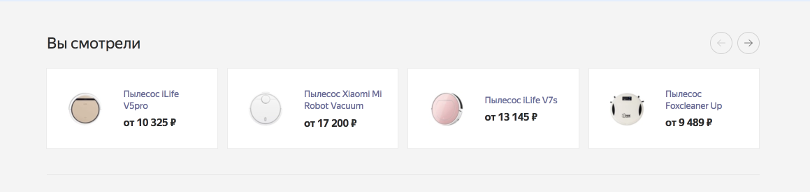Декомпозировали
- Список и прокрутка
- Карточка товара
Чек-лист истории просмотров
1. Список и прокрутка
| Проверка | Результат | |
|---|---|---|
| 1 | Пустая история | |
| 2 | Первый элемент | |
| 3 | 1 страница (4 элемента) | |
| 4 | 2 страницы (5 элементов) | |
| 5 | Несколько страниц | |
| 6 | Отображение стрелок прокрутки |
Чек-лист истории просмотров
2. Карточка товара
| Проверка | Результат | |
|---|---|---|
| 7 | Изображение есть | |
| 8 | Изображения нет | |
| 9 | Название короткое | |
| 10 | Название длинное | |
| 11 | Ссылка в названии | |
| 12 | Цена товара с валютой |
Еще пример чек-листа
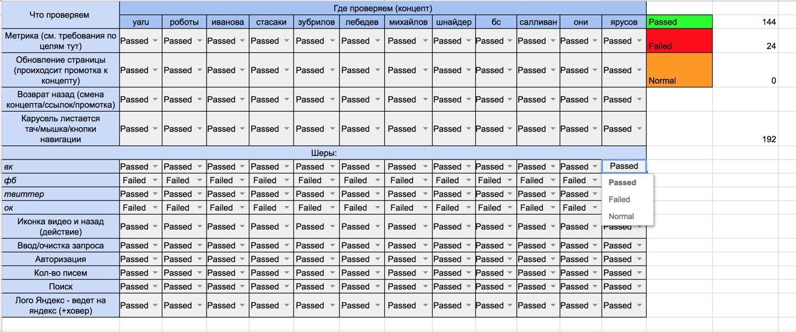Где хранят чек-листы?
- в таблицах
- в специально предназначенной системе
- в корпоративной wiki
- в mindMap схемах
MindMap как тестовая документация
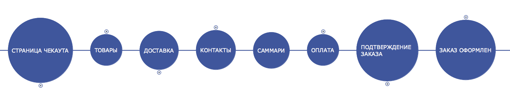MindMap как тестовая документация
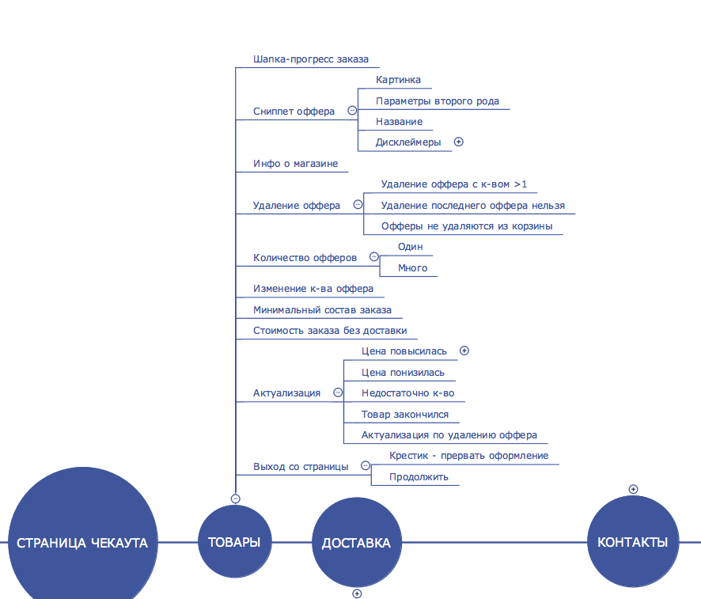Минусы чек-листа
- Не отражает в полной мере что и как проверялось
- Не подходят для обучения и для джуниоров
Плюсы чек-листа
- Важные проверки не будут пропущены
- Меньше рутины и затрат на поддержку документации
- Уменьшает эффект пестицида, расширяет покрытие
Тест-план
Документ, описывающий весь объем работ по тестированию
Другими словами: список проверок + сроки, риски, ресурсы, методы и тд
Тест-план
- Что и где тестируем?
- Как тестируем?
- Когда тестируем?
Что и где тестируем?
- Описание системы/приложения и ее функций
- Декомпозированный список проверок для функций
- Какие тестовые среды используем
- Что тестирует, а что НЕ тестируем
Как тестируем?
- Какие области наиболее приоритетны
- Инструменты и среды тестирования
- Какие виды тестирования используем
Когда тестируем?
- Сколько у нас ресурсов
- Когда начать и когда закончить тестирование
- Последовательность проведения работ
Пример тест-плана
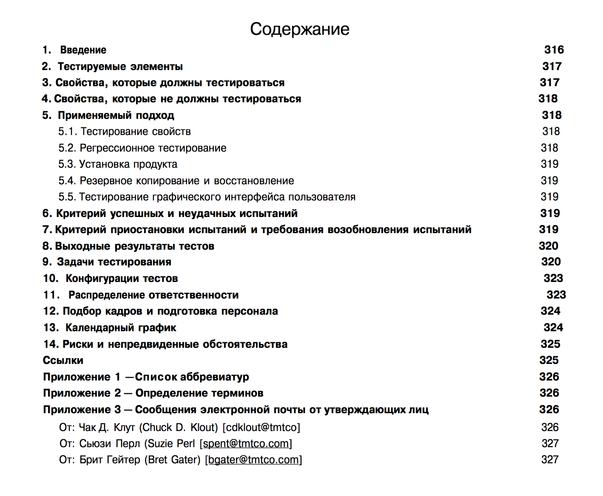Пример тест-плана
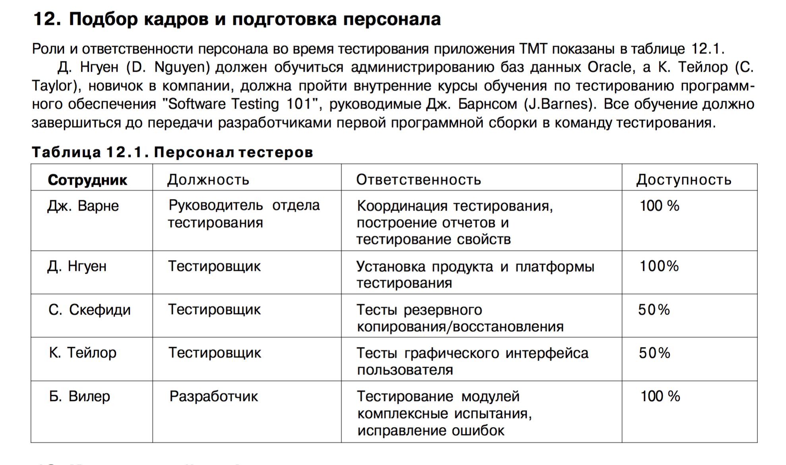Пример тест-плана
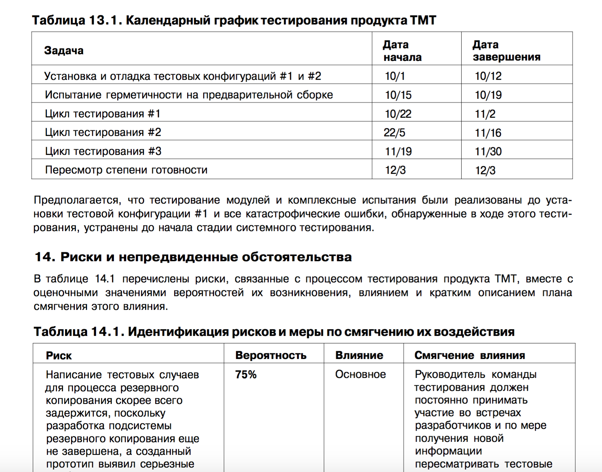Когда нужен тест-план?
- Нужно четко договориться о целях и стратегии тестирования
- Есть распределенная команда и нужно разделить работу
- Обосновать ресурсы и сроки заказчику
Итог
Тест-кейс - одна конкретная проверка
Чек-лист - список проверок без подробностей
Тест-план - список проверок + сроки, ресурсы, методы
Когда используем какую документацию?
| Что | Когда |
|---|---|
| Тест- |
Для регресса или проверки очень важного |
| Чек- |
Почти всегда |
| Тест- |
Нужны точные задокументированные договоренности |
Тестовая документация
- До тестирования : Тест-кейс, Чек-лист, Тест-план
- После тестирования: Отчет
Отчет
Получается из тест-плана, чек-листов и наборов тест-кейсов
Отчет
- Что проверили
- Дефекты / "ок"
- Сколько времени потратили
Чек-лист истории просмотров
Список и прокрутка
| Проверка | Результат | |
|---|---|---|
| 1 | Пустая история | ок |
| 2 | Первый элемент | ок |
| 3 | 4 элемента | ок |
| 4 | 5 элементов | ок |
| 5 | Несколько страниц | ок |
| 6 | Отображение стрелок прокрутки | ок |
Чек-лист истории просмотров
Карточка товара
| Проверка | Результат | |
|---|---|---|
| 7 | Изображение есть | ок |
| 8 | Изображения нет | bug-1 |
| 9 | Название короткое | ок |
| 10 | Название длинное | ок |
| 11 | Ссылка в названии | ок |
| 12 | Цена товара с валютой | ок |
MindMap как тестовая документация
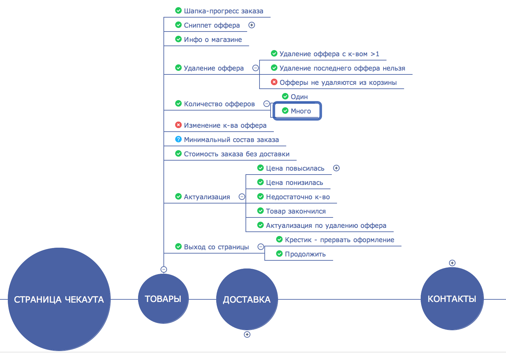Документация после тестирования: что еще?
- комментарий в тикете
- апрув релиза
Документация после тестирования
Зачем?
Сообщить о результатах тестирования
Цель тестирования
Предоставить обратную связь о состоянии продукта
Результат тестирования
"Все ок" или список дефектов/улучшений - это тоже результат тестирования
Но вспомнишь ли ты потом, что проверял?
А поможет ли это составить полную картину проведенных тестов?
Точно ли такой обратной связи достаточно?
Результат тестирования
Нужно хотя бы иметь список того, что проверял
Исследовательское тестирование
Не предусматривается в тест-плане
Одновременно и техника, и вид тестирования
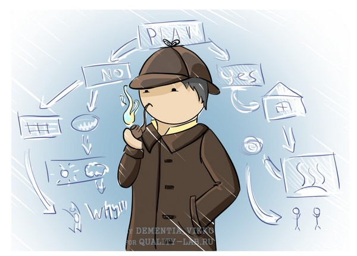Исследовательское тестирование
- Разработка и выполнение тестов в одно и то же время
- Тесты изменяются во время выполнения
- Следующий тест выбирается по результатам предыдущего
- Одновременно происходит изучение тестируемой системы
Исследовательское тестирование
Плюсы: Можно найти новые дефекты; изучить продукт; уточнить существующие тесты
Минусы: Непонятно, как планировать; не всегда подойдет для джуниоров
Когда применять
- При изучении нового
- На ранних этапах разработки
- Для расширения/разнообразия тестов из плана
Часть 2. Требования к ПО
- 2.1 Требования и ожидаемый результат
- 2.2 Как тестировать требования
2.1 Требования и ожидаемый результат
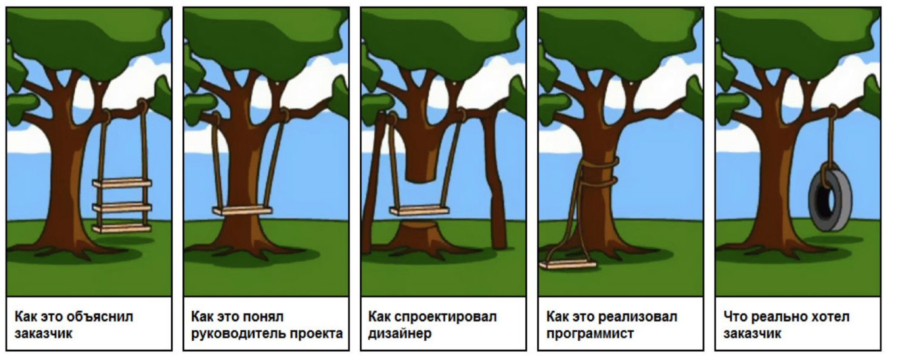Тестирование
Проверка соответствия программы требованиям
Требования
Или ТЗ, документация, спецификация - это описание того, как система должна работать
Пример: wiki-разметка
((https://ya.ru/ Яндекс))
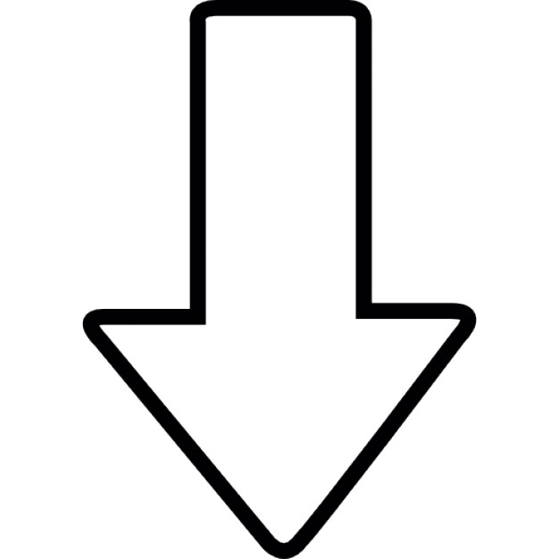Яндекс
Пример
То же самое, но в виде двух полей для редактирования
Название указывать не обязательно, оно для удобства
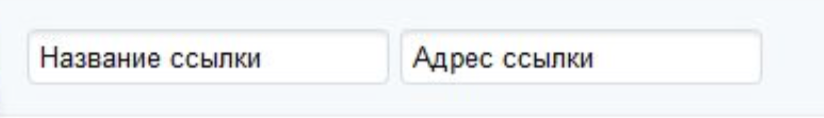Яндекс https://ya.ru/
Пример: После сохранения
Значения в поле "Источник" - ссылки
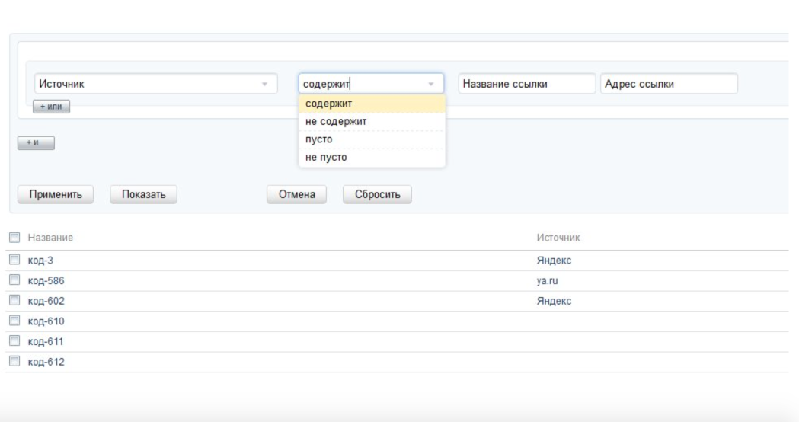ТЗ: Поиск по гиперссылке
Поиск осуществляется как по названию так и по значению гиперссылки. Критерием заполненности условия фильтрации считается заполнение хотя бы одного из полей.
Тестовые данные
| Название ссылки | Значение ссылки | |
|---|---|---|
| 1 | Яндекс | https://ya.ru |
| 2 | Яндекс | https://google.com |
| 3 | https://ya.ru |
Обнаружилось
При поиске по значению https://ya.ru - только один результат.
| Название ссылки | Значение ссылки | |
|---|---|---|
| 3 | https://ya.ru |
Потому что в требовании было написано: "Поиск как по значению, так и по названию"
Программа, соответствущая плохому ТЗ, непригодна
А бывает наоборот
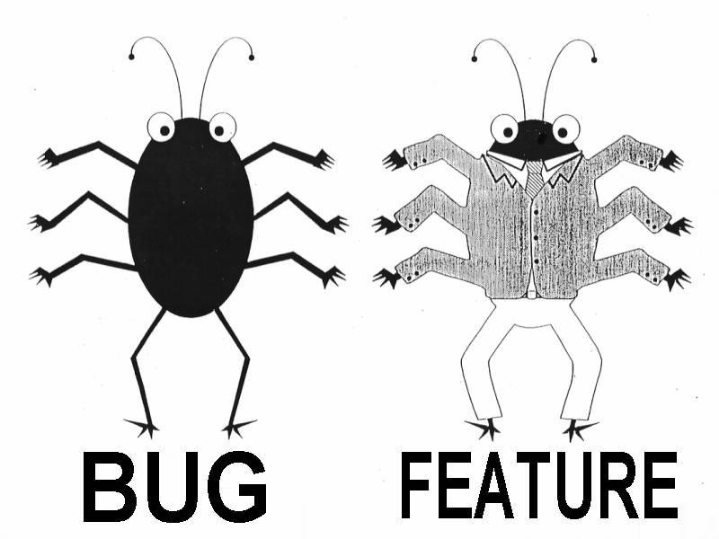Расхождение между программой и ее спецификацией считается ошибкой тогда, и только тогда, когда спецификация существует и она правильна.
Правильность работы программы нельзя доказать логически.
Отсюда следует
Чтобы хорошо протестировать программу, недостаточно сравнить реализацию с ТЗ, потому что:
- ТЗ может быть неправильным
- ТЗ вообще может не быть
- Требования могут быть неявные
Явные требования
Требования, которые явным образом описаны в ТЗ, спецификации
Неявные требования
Не описаны явным образом в ТЗ, но подчиняются жизненным реалиям, законам математики/физики и тд, и зависят от явных требований
Явное требование
Поле "Адрес доставки" являетяс обязательным. Покупатель с него может ввести Города, Улицы и дома
Неявное требование
Не во всех городах есть улицы (Зеленоград), а иногда нужно ввести еще район
Тестовые оракулы
Тестовые оракулы
Способ распознавания правильного и неправильного поведения продукта
или
Способ генерации ожидаемого результата теста
History
История
Сравнить с предыдущей версией
Image
Имидж, бренд
Система соответствует имиджу организации, ее бренду или репутации.
Comparable products
Похожие продукты
Сравнить с похожими продукатами/услугами/системами
Claims
Требования
Соответствует требованиям, как зафиксированным в докуметации/ТЗ, так и обсужденным на встречах
Users expectations
Ожидания пользователей
Система соответствует ожиданиям пользователей
Product
Продукт / Внутренняя согласованность
Каждый элемент системы (или продукта) будет работать по тому же принципу, что и другие сопоставимые элементам в той же системе.
Purpose
Предназначение
Система выполняет функции, для которых она предназначена.
Standarts, statutes
Стандарты и законы
Система соответствует законам или стандартам, которые имеют отношение к продукту.
Familar problems
Схожие проблемы
Нет проблем похоижих на те, с которыми мы уже сталкивались
Explainability
Объяснимость
Поведение системы объяснимо
World
Мир
Система соответствует представлениям о мире
Тестовые оракулы
- history
- image
- comparable products
- claims
- users expectations
- product
- purpose
- standarts, statutes
- familar problems
- explainability
- world
Тестовые оракулы
Программный код оракулом быть не может!
Требование и тест-кейс: чем отличаются?
ТЗ описывает общие правила, а тестовый случай - это одна конкретная ситуация из множества, которые описаны в этом требовании
Пример ТЗ
Для всех элементов добавления товара в корзину должен быть тултип с текстом “Положить товар в корзину” (товар не в корзине) и “перейти в корзину” (этот товар уже в корзине)
Пример проверки
- Открыть карточку товара, который уже в корзине
- Навести курсор на иконку "В корзине"
- Появился тултип с текстом "Перейти в корзину"
2.2 Тестирование требований
Зачем?
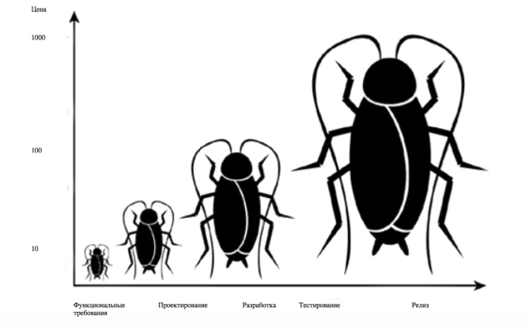Корректность
Требование не содержит фактических ошибок
Плохой пример: После набора номера в ожидании соединения пользователь должен слышать короткие гудки
Однозначность
Требование нельзя понять двояко
Плохой пример: Поиск осуществляется как по названию, так и по значению гиперссылки
Полнота
Требование содержит исчерпывающую информация о том, что должна и делать система
Совместимость
Требование не должно противоречить другим требованиям и ограничениям системы
Плохой пример: Система должна запрашивать из социальных сетей адрес электронной почты пользователя.
Понятность
Требование должно быть понятно всей команде разработки и заказчику
Плохой пример: Передатчик телефона должен использовать амплитудно-фазовую модуляцию с несущими от 2 до 7,5 МГц с шагом 500 кГц
Осуществимость
Требование можно реализовать с приемлимыми трудозатратами в рамках существующих технологий
Пример: невозможно требовать от системы отклик в 1 миллисекунду при больших нагрузках
Проверяемость
Требование можно проверить
Плохой пример: Система должна работать быстро
Критерии качества требований
- Корректность
- Однозначность
- Полнота
- Совместимость
- Понятность
- Осуществимость
- Проверяемость
Как тестировать требования?
- Предварительное беглое чтение
- Техники тест-дизайна
- Тест-кейсы
- Макеты и прототипы интерфейсов
- Понимание предметной области
- Знание уже реализованной части системы
Итог
Тестирование - это
проверка соответствия реального поведения программы ожидаемому,
осуществляемая путем наблюдения за ее работой в специальных, искусственно созданных ситуациях,
выбранных определенным образом.
Тестирование - это
- проверка соответствия реального поведения программы ожидаемому,
- осуществляемая путем наблюдения за ее работой в специальных, искусственно созданных ситуациях,
- выбранных определенным образом.
Тестирование - это
- проверка соответствия реального поведения программы ожидаемому,
- осуществляемая путем наблюдения за ее работой в специальных, искусственно созданных ситуациях,
- выбранных определенным образом.
Тестирование - это
- проверка соответствия реального поведения программы ожидаемому,
- осуществляемая путем наблюдения за ее работой в специальных, искусственно созданных ситуациях,
- выбранных определенным образом.
Тестирование - это
- проверка соответствия реального поведения программы ожидаемому,
- осуществляемая путем наблюдения за ее работой в специальных, искусственно созданных ситуациях,
- выбранных определенным образом.
Спасибо. Вопросы?
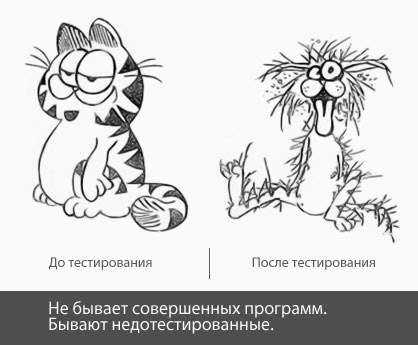Домашнее задание
MindMap для чата Ki1ogram
- Требований нет
- Готового продукта еще нет
Задача: Составить схему, декомпозирующую продукт для предстоящего тестирования